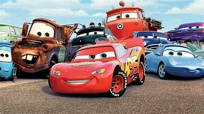

Ronin
Yes, this movie is already a few years old, but it ages great. It has some of the best chases shot in any film in history, as all this is for tastes, to us it made us literally get into those roads and smell the gasoline, feel the adrenaline and the revolutions of the engines beating in our heart. It is one of the movies that for car fans is impossible to miss. We will not go into further explanations so as not to make spoilers for those who have not yet enjoyed it.
Gone in 60 Seconds
Who hasn't wanted to try to tame Eleanor after watching this movie? For us it is one of the best, you enjoy every moment, it perfectly reflects the passion that those of us who love cars feel when we are with them or think about them. It is literally passion for cars and Eleanor in this movie represents those feelings. Just sit back, relax and enjoy this movie.
Cars
Those who said that those of us who treated cars as if they had a personality have lost their foolishness with this film and we have to thank each of the characters for that. Yes, it is a "children's movie" but we believe that it has marked us all, we have enjoyed it, we have become fond of each one of them, they have made us feel affection, happiness and even sadness. It instills good values in the little ones of the house and in those who are not so little, too. It has not only marked a generation but has reached all ages and that is not easy to achieve. That's why it deserves to be in the Top 3, Ka-Chow!